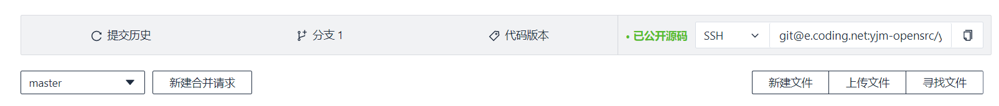
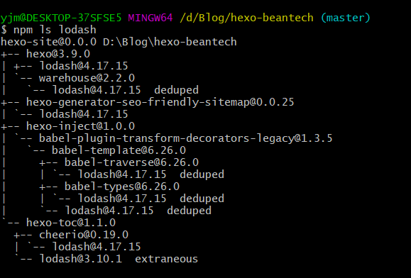
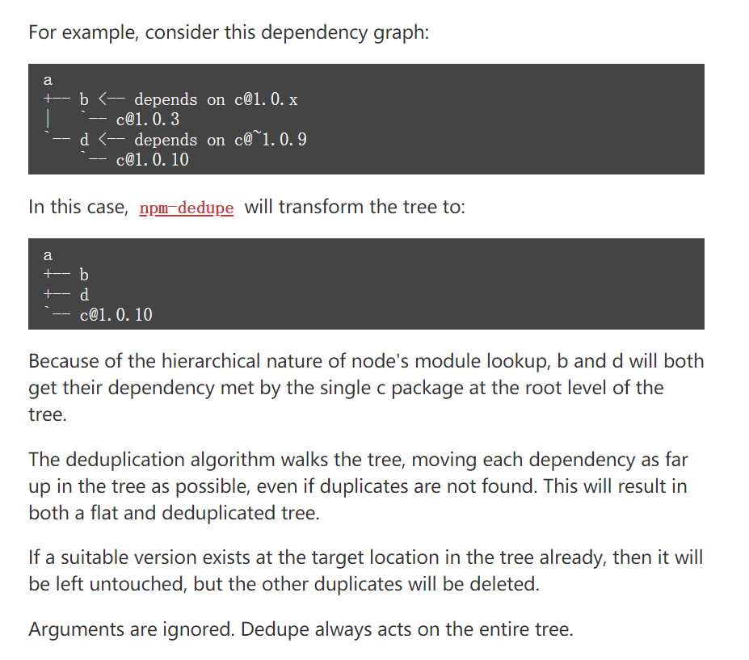
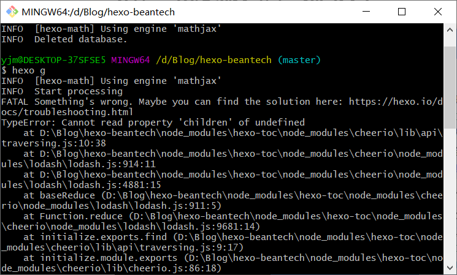
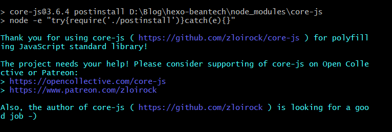

- 为了让我第一个有意义的域名有意义，我决定折腾一个自己的博客，也是记录下我自己的踩坑经历。
- 五块钱买的域名和一整套免费的服务让我找到了Hexo的组织，使用Hexo + Coding + GitHub，这样的访问速度无论在哪都让人安逸。
- 踩坑都在意料之中，填坑也没那么喜出望外，搞完这些也没觉得学习了些啥，不过嘛，人生在于折腾！
配环境
前面都是基操，安装Node.js 、npm 、Hexo什么的，初始化之后就可以在本地看到Hexo原味主题landscape的页面了。然后把这个页面模板挂到coding上去，coding有个静态页面的服务，部署后就OK了。
PS：以前叫Pages服务，现在已经改名了，顺带一提的是，coding的帮助页面已经移走了，从现在coding的官网进帮助页面，里面的内容才是有效的，不知为何，以前的帮助页面仍然保留了下来，所以百度搜出来的某些 “官方配置教程” 现在已经找不到对应的服务了，里面的内容已经过时了。
https://help.coding.net/
这个才是现在官方的、有效的帮助页面。
基操部分
我的环境均为win10，先安装Node.js
然后就可以用npm了，以下是在git bash命令行里操作的
1 | $ npm install -g hexo-cli |
PS：Hexo官网说安装完之后，可以使用以下两种方式执行Hexo：
npx hexo <command>- 将Hexo所在的目录下的
node_modules添加到环境变量之中即可直接使用hexo <command>：
2
>
然而我一开始还是第一种办法
npx hexo <command>尝试成功与否，后来就能直接hexo <command>的去用了，也没别的操作就直接可以了……
然后就可以进行初始化了！找一个空文件夹，在里面打开git bash：
1 | $ hexo init |
或者：
1 | $ hexo init <folder> |
完成之后，就会出现这样的目录结构：
1 | . |
现在只需要改一下_config.yml里的theme配置：
1 | theme: landscape |
在hexo init的文件夹下git bash，运行三连命令：
1 | $ hexo clean |
然后按照提示就可以在 localhost:4000 的链接地址里看到页面效果了。此时要部署到coding上还需要在coding下新建代码仓库，设置部署ssh，然后复制这个项目的git地址，如图：

然后在_config.yml里面修改部署配置：
1 | deploy: |
如果想同时挂到GitHub，这里的部署配置可以改为：
1 | repository: //或者为repo: |
这里以git@…………的形式部署的都是用SSH方式部署，有关SSH设置的部分见@@@@。做完这些以后就可以部署了，三连命令又多了一个：
1 | $ hexo d |
这样，如果你绑定了自己的域名，就可以在自己的域名看到你做的网页了，安逸。
自定义部分
- 虽然我觉得landscape主题其实挺好看的，而且也确实不错，但是未免显得自己太low，于是换主题成了必需步骤，我选择的主题的原版是Hux Blog，不过这个不是用Hexo做的，被kaijun用Hexo移植，后又经YuHsuan更改并改名叫BeanTech，被推到了Hexo官方主题推荐上，挺靠前的，被我相中了 ：）
- 但是问题在于用Hexo做的几个兄弟都已经不再维护这个主题了，就导致里面很多插件都过时了，或者存在一些小问题，不过无碍，这个主题风格的整体设计盖过了这些小瑕疵，我觉得这个设计比Next强多了 ：）
用这个主题首先的问题是，你git下来的文件夹目录，本身就是一个初始化后的完整Hexo目录，不是那种主题文件夹，所以你要是把这个目录放到自己init后的目录下的themes里面，你无论如何也得不到正常的网页，所以，挑完主题git clone以后先看看这个目录结构，这样就很稳。
git下来之后在目录第一层下执行npm install安装所需要的依赖，这里对于网络要求其实不高，有网速就行，不需要加BUFF。可能过程中有些小问题，后面再说。
这个git下来的目录第一层下有个_config.yml，这里的配置是接下来重点关注的地方。先修改这里的theme，看看这里的配置与目录下themes文件夹里的主题文件夹名是否相同，若不同，按后者修改。然后修改_config.yml里的deploy配置，与上文相同。然后hexo clean && hexo g && hexo d三连应该就可以看到目标网页了！当然也可以先hexo s在本地先试试。
修改网页参数以及部分模板
后续补充。
亿点点小问题
踩坑、填坑记录。
npm 安装依赖问题
首先网速可能会出问题，但是一般情况都OK，不行就换热点，这里其实不用加BUFF。能顺利去下载插件以后，就迎来了各种奇妙的小问题们。
在下面的内容中，插件、依赖、包、软件包，在某种意义上讲，它们是相同的东西。
npm相关操作，请参阅npm中文文档
各种 WARN deprecated
安装过程中，如果你的主题长时间没有人维护（比如我这个，Hexo移植版就没人管），那么很大概率在执行npm install时遇到这样的情况（这里仅作示范，我原来的警告已经出不来了）：
1 | npm WARN deprecated core-js@1.2.7: core-js@<2.6.8 is no longer maintained. Please, upgrade to core-js@3 or at least to actual version of core-js@2 |
deprecated是被废弃的意思，由于时间太久，你所使用的主题所需要的某个版本的依赖可能已经做出重大更新以至于必须装某一版，又或是可能已经被移到另一个名字的依赖下，又或是可能已经被删除不用，又或是你安装不了（平台不符），又或是由于前面种种可能原因而导致的某个前置依赖没有安装，等等。这些都会导致出现这样的npm WARN deprecated ******的提示，而由npm中文文档得知，如果你是某个包的所有者，你可以通过npm deprecate <pkg>[@<version>] <message>去更新npm注册表中指定包所对应的数据条目，为尝试安装它的所有人提示版本作废的警告信息。
这个时候我们的选择有这样几种：
-
- 依照提示，需要升级的就升级，要把某个插件升级到指定版本，可以使用这样的命令：
1 | $ npm install <pkg>@<version>[--save] |
- 若不指定版本，则默认更新到最新版（latest），install 可以简写为 i 。在npm中文文档中对于这里的安装指令的flag有着更多的解释，具体以其为准，我这里的可能已经过时了。
--save表示将这个包及其版本号添加到package.json或package-lock.json里的依赖配置中，在npm中文文档中对此也有着新的解释。 - 又或者使用：
1 | $ npm install <pkg>@latest //更新到最新版 |
- 不过更新到最新版的命令最好慎用，新版本有没有新的未知未解决的BUG谁也不知道，如果你不想做先驱者，可以选前者，按照命令行给的提示安装固定版本的插件。
-
- 按照提示需要安装别的什么前置插件，或者是此插件已经被移到别的插件下、需要安装后者，这样的情况就安装新插件就好了，方法同上。
-
- 对于某些提示：此插件（包）的某个功能被去掉，此插件已经不再存在，等类似提示，可直接忽略，或者把这条依赖在应用程序信息文件
package.json中直接删掉，反正不存在了你怎么也用不了，直接删了就行。
- 对于某些提示：此插件（包）的某个功能被去掉，此插件已经不再存在，等类似提示，可直接忽略，或者把这条依赖在应用程序信息文件
-
- 有这样一条命令：
1 | $ npm update [-g] [<pkg>...] //更新包 |
-g是全局的意思（global），如果你添加了这个flag，并且后面没有指定包名，那么package.json将会被修改，并保存所有依赖最低所需的新版本（从npm@5.0.0开始）。update 也可以简写为up或另写为upgrade 。其他情况见npm中文文档。不过这个命令也是要慎用，有些不需要更新的包保留即可，我们只要把报错与警告全部解决就行，没必要全都升级。
npm ERROR
这个情况挺多的，我遇到的只是某个重要依赖没有安装或者运行后续安装脚本（postinstall script）失败，按照上面的步骤安了就行了，其他的按照提示来吧，npm给的提示还是挺全的。ERROR属于必须解决的内容。
npm WARN SKIPPING OPTIONAL DEPENDENCY
这个意思是选择性跳过的依赖没有安装从而带来的警告，这个我不知道有没有其它的可能性，但是我这里出现的情况，是因为平台不符而导致的，具体如下：
1 | npm WARN optional SKIPPING OPTIONAL DEPENDENCY: fsevents@1.2.11 (node_modules\fsevents): |
我这里出现这些的原因是，这些都是macOS上的包，我是win10环境，当然安装不了，具体带来了什么影响我也不知道，因为我到现在也没看出来，所以这几个警告实际可以忽略，如果你不想看到它们，你也可以在它们被配置的地方，把它们删掉，这个操作挺麻烦的，我懒得做就一直带着这些警告了。
vulnerabilities(high、low、moderate)（重要）
vulnerability是漏洞的意思，这个提示有点类似系统漏洞，甚至解决办法也有点类似（按以前对于电脑管家提示的系统漏洞我们的态度，不管就是了，高危漏洞也不管 ）。
当然我们怎么可能放着漏洞不去解决呢，而且npm还给出了操作建议：
1 | found 4 vulnerabilities (1 low, 3 high) |
audit是审查的意思，前面这个指令应该是自动修复的意思，带有可能性，你有不小的概率执行完，仍然解决不了问题，然后遇到npm给的新的建议：
1 | fixed 0 of 4 vulnerabilities in 7193 scanned packages |
这是让你人工解决了，自动修复也无能为力。当然在执行完npm audit fix你还可能会遇到这样的提示：“问题没解决，不过你可以使用npm audit fix --force进行尝试。”这是让你执行强制修复命令试试，到这一步，我的建议是绝对别用这个强制命令，执行完直接报错ERROR的可能性非常大，反正我一直是执行完直接报错的。
遇到这个漏洞问题，最好是执行npm audit进行漏洞审查，此时命令行会给出一个报告，具体说明漏洞详情，如下所示：
1 | === npm audit security report === |
这里我只截取了一部分，可以看到npm audit提供的报告还是很详细的。我这里原因是原型污染漏洞，因为这个漏洞的存在，攻击者可以使我的web应用程序崩溃或改变行为（如数据丢失、服务中断、对敏感信息的未授权访问或其他问题），npm文档（auditing-package-dependencies-for-security-vulnerabilities）对问题描述与解决办法有着更详尽的说明。当然，这要求攻击者熟悉每个web应用程序的工作方式，并且能够修改JavaScript对象原型。我这连访问量都特么没有，谁来攻击我，所以其实可以忽略。
有的情况下，在报告开头处，会给出一个建议的解决办法，比如建议你执行哪条命令去安装个什么，有这样的建议命令最好就执行一下，一般可以解决其中的几个漏洞。如题所示。

如果没有解决，或者这几个漏洞也没有给出建议解决办法，比如我这个情况，那么就根据报告，发现其实是包的版本太低所导致的，这里就引出了如何更新指定位置包的问题，例如上文显示的lodash包，如果你直接使用npm install lodash@4.17.11 --save命令去安装指定版本的包，你会发现你其实并没有装到那个目录下，比如按照audit报告你需要安装到hexo-toc > cheerio > lodash下，但是你其实装到了hexo-toc下，并且在hexo-toc目录下的package.json或package-lock.json下还添加了新的依赖配置（由–save这个flag所导致的），这时在命令行里执行：
1 | $ npm list lodash |
你就可以看到这个包的完整安装情况，list可以简写为 ls 或 la 或 ll 。如图所示：

这里依赖后跟的deduped、extraneous、missing或invalid分别是指重复数据可删除、无关软件包（未在父软件包的依赖项列表中列出）、软件包丢失、软件包无效，对于deduped软件包，可以使用如下的命令示例进行简化软件包树：

对于extraneous软件包，可以使用npm prune [[<@scope>/]<pkg>...] [--production] [--dry-run] [--json]去移除无关软件包，具体说明见npm prune。当然，deduped与extraneous软件包并不会影响正常使用，你其实不管也是可以的。
而对于missing与invalid的处理就不能不管了，missing软件包是指你的依赖项列表中包含，但是父目录下的node_modules文件夹下却没有这个软件包，一般情况是你直接找到了这个包，然后把它删了，就会出现这种情况，这时我们只需要在命令行里执行npm install即可重新安装。对于invalid的软件包，你可以找到文件位置，把这个包的文件夹删了，然后执行上述步骤即可。
那么我们既然已经知道直接执行npm install <pkg>@<version>不行，那么要如何解决呢？这时，我们就需要更改所有不符合版本要求的子软件包的父软件包的依赖项列表中所配置的对应子软件包版本号，又或干脆在依赖项列表中删去子软件包，如下所示：
1 | { |
这是我的博客根目录下的package.json下的代码，dependencies后就是依赖项列表，但是，一般出问题不会出在这些依赖项上，都是这些依赖的子依赖甚至子子依赖会出现问题，这就需要按照npm audit提示目录，例如hexo-toc > cheerio > lodash，在根目录下的node_modules文件夹内找到/hexo-toc/node_modules/cheerio/package.json文件，修改依赖项列表。
但是这样做完依旧不行，因为安装某些软件包尤其是子软件包时**–save**的存在，会导致npm将这个软件包添加到根目录下的package-lock.json文件的依赖项列表中，如果你的操作很冗杂，那么这个文件的依赖项列表将会非常的乱，非常的多，需要你全部修改正确。修改完成之后，把之前有问题的软件包文件夹全删了，回到根目录执行:
1 | $ npm install |
就可以解决问题，值得一提的是，按照npm audit给出的报告，有软件包的描述地址，这里有软件包的描述与版本更新情况，我们在设置依赖项列表的软件包版本号时，最好是符合最低要求即可，不要追求最新版，原因之前也已经提过。
npm 一键解决依赖问题
上述办法的确能解决问题，我也是查了很久才得到这么些个办法，但是，我们说依赖安装产生问题，很多时候其实是我们看了太多教程，进行了太多错误、冗余的操作命令，而导致依赖树逻辑产生问题，如果你不愿意去修改各种文件夹下的package(-lock).json文件，你可以这样去做：
- 回到根目录，保留根目录下的
package.json文件 - 把根目录下的
node_modules文件夹和package-lock.json文件都删了 - 在根目录下重新执行
npm install
这时候如果你有什么误操作，这时候基本都修正了，唯一不会被修正的是，vulnerabilities的版本过低，事实上，我提高了版本以后，反而出现了新的问题，导致我的博客generate都过不了，如图：

我认为这就是版本提升带来的问题，具体是什么我也没搞明白，留待后续补充吧。所以我这里的几个vulnerabilities就没管，问题也不大。
PS：根据 Hexo官网新闻，我很高兴地看到从最新版的Hexo 4.2起，Hexo已经移除了cheerio与Lodash，并分别用native API与native JaveScript替代，果然我查看了一下我的版本，我是hexo@3.9.0，hexo-cli@3.1.0，我还在用这些被人家drop了的东西，我活该有vulnerabilities。
npm fund
这个不是啥问题，讲道理，我第一次知道这东西的时候都惊了，这路子真野！
1 | ……………… |
这是在说有6个软件包（的所有者）在寻求资助。执行npm fund则会以类似audit报告的方式，列出这些软件包，以及资助网站。
PS：虽然咱是开源，但是大家也行行好吧~

安装过程中也会出类似的东西，不过我很纳闷，装这软件包的不都是搬运工们吗？求职发到这来，哪个老板能看到…………
Hexo添加数学公式渲染
讲道理Hexo这东西确实有够自由的，自由==一无所有，这是在让人无法不踩坑。
每位博主都会说，“谁写博客还不整点公式呢？”然后开始了添加公式渲染插件教学。
对啊！谁写博客还不整点公式呢？？虽然我这第一篇博客是静态网页踩坑记录，但是这不妨碍我这个博客是一个嵌入式、机器人与控制理论专题博客（傻笑），那能离得开数学公式吗？嗯？
网上的方法那真是过江之鲫啊，可能是我这个主题有毛病，或者我的操作问题（可能当时我还在解决lodash的问题），反正很多配置Mathjax的方法我这都存在安装问题，最终我还是选择了KaTeX，不过最近网友的评价让我对KaTeX感到欣慰，它已经是能独当一面的渲染方案了！
- Compare Mathjax VS KaTeX
- Mathjax
- 优点
- 1.对
Latex语法支持全面 - 2.Next主题对其支持比较好有优化，单行过长时会置于容器内，手机体验良好（可惜我不用）
- 3.中文不会出现字符警告
- 1.对
- 缺点
- 1.需要页面js加载渲染
- 2.kramed渲染器对内联公式的转义字符
\支持不好
- 优点
- KaTeX
- 优点
- 1.页面加载极快对比网站
- 2.渲染器效果好，相对于kramed对Mathjax的内联公式
- 缺点
- 1.Next主题对其优化较差，单行过长页面会出现位移（幸亏我不用）
- 2.渲染.md时，若出现中文字符会弹出大量警告 （我们是在意警告的人嘛）
- 3.会严重影响Hexo渲染速度（不能说自己太快）
看了从网上找的二者比较（括号是我写的），包括据说现在KaTeX大部分符号都支持了，与Mathjax非常接近，再加上KaTeX的加载公式速度明显比Mathjax方式高许多，我就安心的找起了配置KaTeX的方法。
- 优点
- Mathjax
配置过程
首先，渲染器我们不使用默认的hexo-renderer-marked，也不使用hexo-renderer-kramed，也不适用默认加hexo-math插件的方式，这几种都需要更改渲染引擎的js脚本，保证转义字符与数学公式的渲染不会出现混乱。我尝试了但没有成功（后来觉得应该是没添加cdn的原因），不论如何，我现在的情况就挺不错。
- 卸载默认渲染器hexo-renderer-marked并修改依赖项列表
1 | $ npm uninstall hexo-renderer-marked --save |
- 安装新的渲染器hexo-renderer-markdown-it-plus，但是这东西又没人维护了，所以我们使用 @upupming/hexo-renderer-markdown-it-plus。这份 fork 的代码使用了@neilsustc/markdown-it-katex（事实上我发现这个也不是neilsustc本人的repo，而是yzhang-gh从waylonflinn那里fork来的，最近还在维护，KeTaX的版本更新到0.10.0，而官方KeTaX版本已经到了0.11.1，暂时还没什么影响，我还没具体开始写数学公式），同时它也是 VSCode 的插件 Markdown All in One所使用的（这个all in one就是yzhang-gh做的），所以我们可以获得新的 KaTex 功能例如 \tag{}。
1 | $ npm install @upupming/hexo-renderer-markdown-it-plus --save |
- 然后修改
_config.yml，增加数学公式配置：
1 | math: |
然后添加CDN，这里正确做法是找到根目录下node_modules下@neilsustc/markdown-it-katex的README，因为从markdown-it-plus 2.0.0开始，以markdown-it-katex为数学公式渲染引擎，东西得配套嘛，CDN也得照这个来。在这个README下我们可以看到：
- Use it in your javascript
1 | var md = require('markdown-it')(), |
- Include the KaTeX stylesheet in your html:
1 | <link rel="stylesheet" href="https://cdn.jsdelivr.net/npm/katex@0.10.0-alpha/dist/katex.min.css"> |
- If you’re using the default markdown-it parser, I also recommend the github stylesheet:
1 | <link rel="stylesheet" href="https://cdn.jsdelivr.net/github-markdown-css/2.2.1/github-markdown.css"/> |
照这个来，把所说的stylesheet这一条代码，加到主题目录下的
/layout/_partial/head.ejs内即可。
这里我参照了我根目录下node_modules下的一个依赖katex，这个是官方软件包，我这里版本为0.10.2，与上面的区别不大，可能有影响，但目前我还没遇到。这里的README提供了更为完整的一个template：
1 |
|
如果想要加入自动渲染扩展，可以参考Auto-render Extension。
到这里数学公式渲染插件就添加完毕了，下面是一个简单的测试，如果我遇到了问题，我还会再来补充配置办法的。
转义及数学公式测试
$ hh $ hh $$ hh $$
$
$$